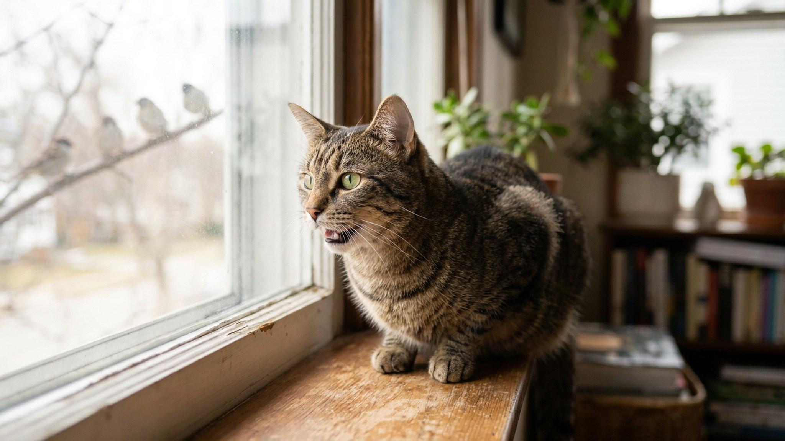

Кошка замерла на подоконнике, смотрит на голубя за стеклом — и вдруг начинает издавать быстрый стрекочущий или «цокающий» звук, двигая челюстью. Многие хозяева видят это впервые и не знают, что думать. Этот звук — один из самых загадочных в кошачьем репертуаре, и у учёных до сих пор нет окончательного ответа, зачем он нужен. Но несколько хороших гипотез есть.
🐾 Дневник здоровья питомца — в кармане
Вес, прививки, симптомы и напоминания в одном приложении. AnimaLife следит за здоровьем питомца вместо вас.
Стрёкот кошки — это быстрые «ца-ца-ца» или «ки-ки-ки», которые производятся при резком смыкании и размыкании зубов с полуоткрытым ртом. Нижняя челюсть вибрирует в характерном ритме. Хвост при этом обычно опущен и слегка покачивается, тело неподвижно или слегка дрожит, взгляд не отрывается от объекта.
Звук встречается у диких кошачьих — в том числе у ягуаров и сервалов — при наблюдении за добычей на расстоянии. То есть это не домашнее изобретение, а эволюционно древний паттерн.
Самая распространённая гипотеза: кошка имитирует так называемый «укус в позвоночник» (killing bite). Именно этим укусом кошки убивают добычу: быстрые смыкания зубов на затылке жертвы между позвонками перерезают спинной мозг.
Сторонники этой версии указывают: движение челюсти при стрёкоте идентично движению при настоящем убивающем укусе. Мозг кошки «запускает» охотничную программу при виде недостижимой добычи — и тело начинает выполнять финальную фазу, даже если добычи нет в зубах.
Этот паттерн наблюдался в исследовании Wildlife Conservation Society (Бразилия, 2005), где зафиксировали, как ягуар издавал похожие звуки, имитируя крики обезьян — предположительно как способ приманки. Это связало стрёкот с охотничьим арсеналом, а не только с фрустрацией.
Другая версия — стрёкот это эмоциональная реакция на невозможность достичь добычи. Кошка видит птицу, охотничье возбуждение нарастает, но действие невозможно — стекло. Нервное возбуждение «выплёскивается» в непроизвольное движение челюсти.
В поведенческой этологии это называется «вакуумная активность» или «замещающее поведение» — моторная программа запущена, но не завершена, и система «разряжается» хаотичным движением. Похожее встречается у других животных в условиях заблокированной мотивации.
Эта гипотеза объясняет, почему стрёкот чаще наблюдается при виде добычи через преграду (стекло, сетку), чем при реальной охоте.
Бразильское исследование с ягуарами показало ещё одну возможность: кошачьи могут имитировать звуки добычи для приманки. Ягуар воспроизводил крики обезьян-тамаринов — и те приближались.
Применительно к домашним кошкам это объяснение менее убедительно: птицы за окном уже не слышат кошку через стекло. Но если кошка стрёкочет в саду или на балконе — акустическая приманка могла бы работать.
Возможно, это «устаревший» паттерн, сохранившийся от диких предков, которые охотились без стёкол и заборов.
Стрёкот у кошек совершенно нормален. Обратите внимание, если:
В большинстве случаев стрёкот у окна при виде птиц или белок — просто охотничье возбуждение. Это здоровое и нормальное кошачье поведение.
Раз кошка так реагирует на птиц — это готовый инструмент обогащения:
Квартирная кошка лишена охоты — базовой поведенческой потребности, которой у диких кошек уходит 3–5 часов в сутки. Наблюдение за птицами и стрёкот у окна — одна из немногих форм, в которых эта потребность частично реализуется без реальной охоты.
Хозяева, которые закрывают шторы или убирают кошку с подоконника при виде птиц, лишают её одного из главных источников «умственной нагрузки». Стрёкот — не проблема. Это признак живого интереса к миру, который стоит поддерживать.
🐾 Не уверены, что это опасно?
Опишите симптом в AnimaLife — AI-ветеринар за минуту подскажет, что в пределах нормы, а когда пора к врачу.
🐾 Понравился разбор?
Подпишитесь на канал — каждый день разбираем по одному тревожному симптому у кошек и собак: что в пределах нормы, а когда пора к врачу. Подпишитесь, чтобы не пропустить разбор, который может спасти здоровье вашего питомца.